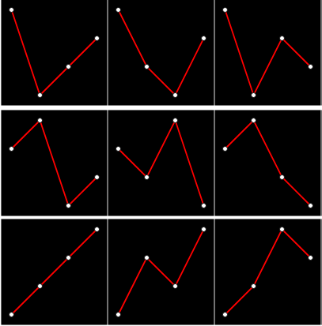
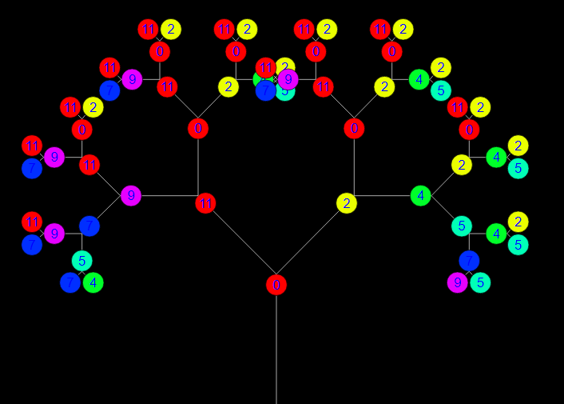
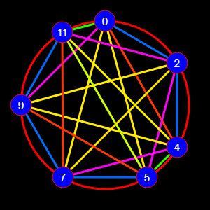
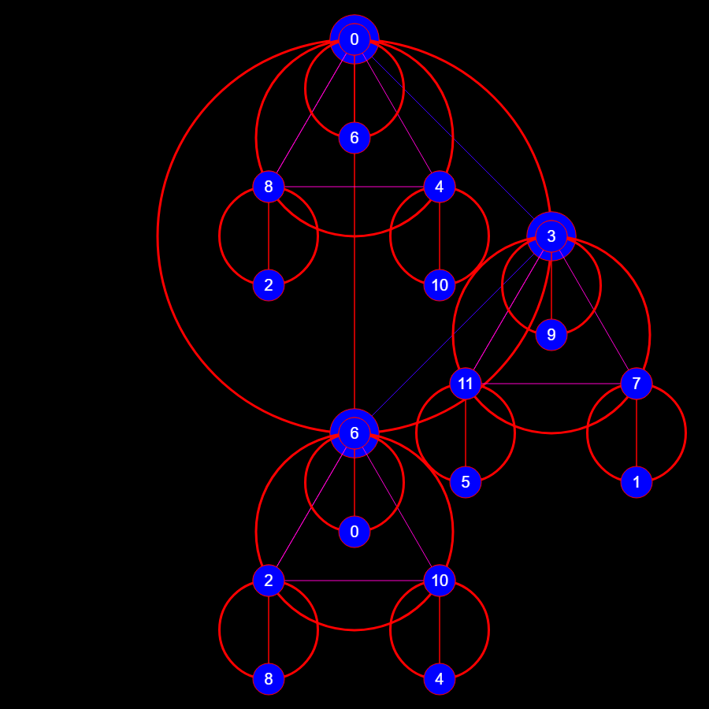
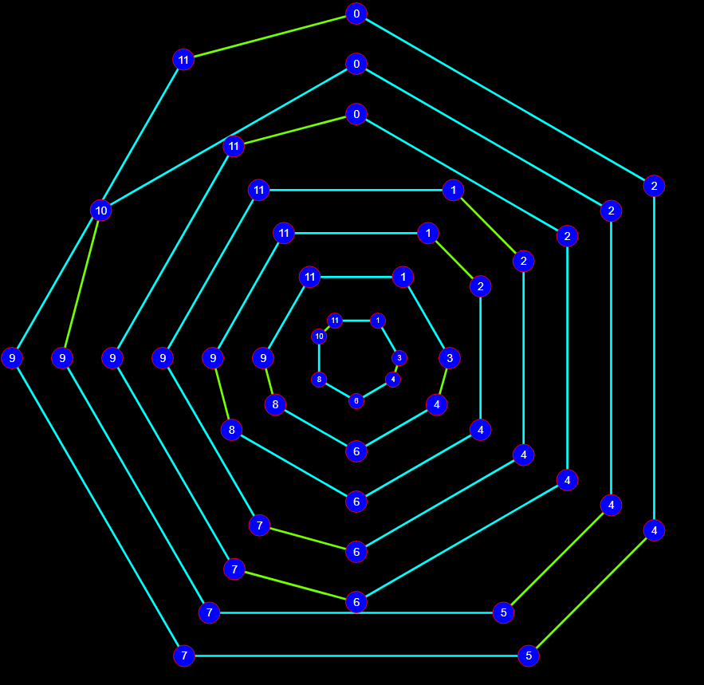

A collection of functions that make visual representations
Note: EDO.show can only be used client-side
Methods
# (static) contour(container_id, pitches, replaceopt, sizeopt)
Plots the contour of a given melody.
| Name | Type | Attributes | Default | Description |
|---|---|---|---|---|
container_id |
String | The ID of a DOM element in which the contour will be shown. |
||
pitches |
Array.<Number> | The melody. |
||
replace |
Boolean |
<optional> |
false | When false, any time the function is called a new contour will be appended to the object. When true, it will replace the contents of the container. |
size |
Number | Array.<Number, Number> |
<optional> |
Size (in px) of the plot. When no values are passed, the plot will take the size of the container. If 1 value is passed, it will be used for both dimensions. Otherwise pass data as [width,height]. |
- See:
-
- /demos/contour_plotter.html
<script src="edo.js"></script>
<script src="raphael.min.js"></script>
<div id="container" style="width:900px;height:600px; margin:0 auto;"></div>
<script>
let edo = new EDO(12)
perms = edo.get.permutations([1,2,3,4])
perms.sort((a,b)=>b[0]-a[0] || b[b.length-1]-a[a.length-1])
for(let perm of perms) {
edo.show.contour('container', perm,false,150)
}
</script># (static) interval_fractal_tree(container_id, lengthopt, angle_spanopt, modeopt, intervalsopt, iterationsopt, length_mulopt)
Makes a fractal tree with branches diverging by given intervals 
| Name | Type | Attributes | Default | Description |
|---|---|---|---|---|
container_id |
String | The ID of a DOM element in which the tree will be shown. |
||
length |
Number |
<optional> |
200 | The length (or height) or the tree's "trunk". |
angle_span |
Number |
<optional> |
90 | the angle between branches. |
mode |
Array.<Number> |
<optional> |
[0,2,4,5,7,9,11] | If provided, the tree will conform to that mode. |
intervals |
Array.<Number> |
<optional> |
[-1,1] | If mode is provided, each interval represents the number of scale degrees away from the current node. If mode is not provided, the intervals represent the interval away from the current node. |
iterations |
Number |
<optional> |
5 | The number of sub-branches on the tree |
length_mul |
Number |
<optional> |
0.7 | The factor by which every new sub-branch's length is to its parent. |
- See:
-
- /demos/fractal_tree.html
<script src="edo.js"></script>
<script src="raphael.min.js"></script>
<div id="container" style="width:900px;height:600px; margin:0 auto;"></div>
<script>
let edo = new EDO()
edo.show.interval_fractal_tree(container_id)
</script># (static) necklace(args)
Graphs a given necklace in a container. 
| Name | Type | Description | |||||||||||||||||||||||||||||||||||||||||||||||||||||||
|---|---|---|---|---|---|---|---|---|---|---|---|---|---|---|---|---|---|---|---|---|---|---|---|---|---|---|---|---|---|---|---|---|---|---|---|---|---|---|---|---|---|---|---|---|---|---|---|---|---|---|---|---|---|---|---|---|---|
args |
Object | An object with the necklace arguments Properties
|
- See:
-
- /demos/necklace.html
<script src="edo.js"></script>
<script src="raphael.min.js"></script>
<div id="container" style="width:900px;height:600px; margin:0 auto;"></div>
<script>
let edo = new EDO(12)
let paper = edo.make_DOM_svg('container',1200,1200,true).paper
edo.show.necklace({paper:paper,pitches:[0,2,4,5,7,9,11]})
</script># (static) necklace_fractal(args)
Graphs necklaces on every node of a parent necklace recursively. 
| Name | Type | Description | ||||||||||||||||||||||||||||||||||||||||||||||||||||||||||||
|---|---|---|---|---|---|---|---|---|---|---|---|---|---|---|---|---|---|---|---|---|---|---|---|---|---|---|---|---|---|---|---|---|---|---|---|---|---|---|---|---|---|---|---|---|---|---|---|---|---|---|---|---|---|---|---|---|---|---|---|---|---|---|
args |
Object | The arguments of the necklaces Properties
|
<script src="edo.js"></script>
<script src="raphael.min.js"></script>
<div id="container" style="width:900px;height:900px; margin:0 auto;"></div>
<script>
const divisions = 12
let edo = new EDO(divisions)
edo.show.necklace_fractal({container_id:'container',necklaces:[[0,3,6],[0,4,8],[0,6]]})
</script># (static) nested_necklaces(container_id, necklaces, replaceopt, radiusopt, ringopt, min_node_radiusopt)
Graphs nested necklaces. 
| Name | Type | Attributes | Default | Description |
|---|---|---|---|---|
container_id |
String | The ID of a DOM element in which the contour will be shown. |
||
necklaces |
Array.<Array.<Number>> | The necklaces to be drawn |
||
replace |
Boolean |
<optional> |
false | When true, the contents of the container will be replaced by the function. When false, it will be appended. |
radius |
Number |
<optional> |
600 | Radius (in px) of the ring. |
ring |
Boolean |
<optional> |
false | When true, the ring of the scale will be drawn |
min_node_radius |
Number |
<optional> |
When passed, the radius of each node won't be smaller than the value passed |
- See:
-
- /demos/necklace.html
<script src="edo.js"></script>
<script src="raphael.min.js"></script>
<div id="container" style="width:900px;height:900px; margin:0 auto;"></div>
<script>
const divisions = 12
let edo = new EDO(divisions)
let scale = edo.scale([0,2,4,5,7,9,11])
let necklaces = scale.get.scale_degree_transpositions().map((trans)=>trans[0])
edo.show.nested_necklaces("container",necklaces,true,900)
//Graphs all of the common tone transpositions of the major scale
</script>